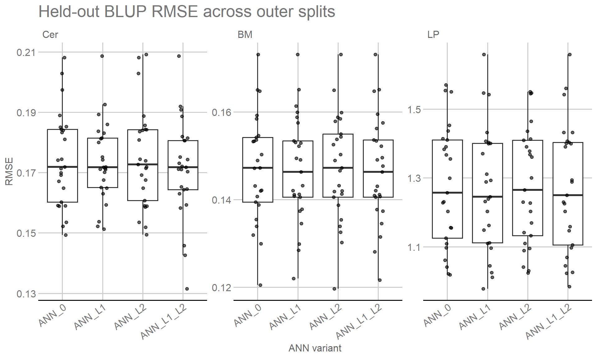
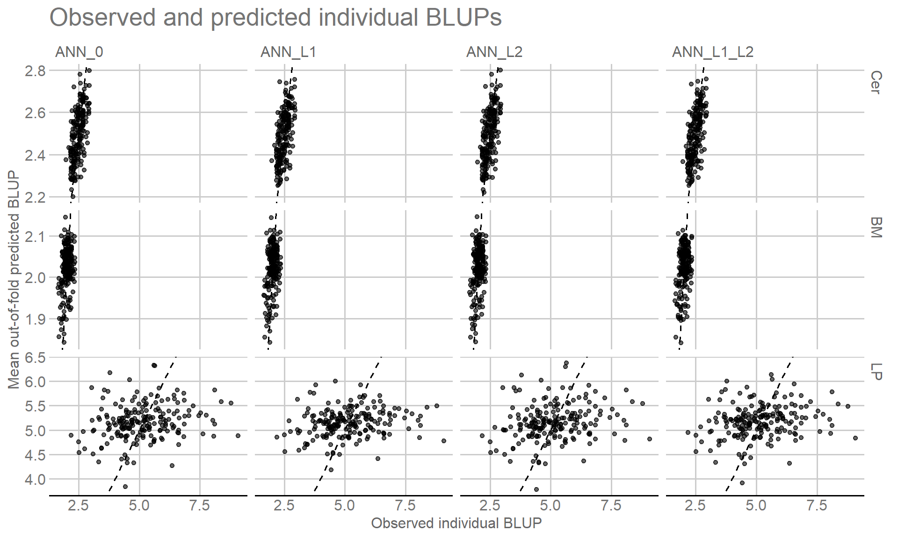

Real data: regularized ANN
Weverton Gomes da Costa
2026-11-19
Last updated: 2026-11-19
Checks: 7 0
Knit directory:
Genomic-Prediction-using-Regularized-Artificial-Neural-Networks/
This reproducible R Markdown analysis was created with workflowr (version 1.7.2). The Checks tab describes the reproducibility checks that were applied when the results were created. The Past versions tab lists the development history.
Great! Since the R Markdown file has been committed to the Git repository, you know the exact version of the code that produced these results.
Great job! The global environment was empty. Objects defined in the global environment can affect the analysis in your R Markdown file in unknown ways. For reproduciblity it’s best to always run the code in an empty environment.
The command set.seed(20260821) was run prior to running
the code in the R Markdown file. Setting a seed ensures that any results
that rely on randomness, e.g. subsampling or permutations, are
reproducible.
Great job! Recording the operating system, R version, and package versions is critical for reproducibility.
Nice! There were no cached chunks for this analysis, so you can be confident that you successfully produced the results during this run.
Great job! Using relative paths to the files within your workflowr project makes it easier to run your code on other machines.
Great! You are using Git for version control. Tracking code development and connecting the code version to the results is critical for reproducibility.
The results in this page were generated with repository version cd613e4. See the Past versions tab to see a history of the changes made to the R Markdown and HTML files.
Note that you need to be careful to ensure that all relevant files for
the analysis have been committed to Git prior to generating the results
(you can use wflow_publish or
wflow_git_commit). workflowr only checks the R Markdown
file, but you know if there are other scripts or data files that it
depends on. Below is the status of the Git repository when the results
were generated:
Ignored files:
Ignored: .Rhistory
Ignored: .Rproj.user/
Ignored: .github/
Ignored: .local/
Ignored: CONTRIBUTING.md
Ignored: data/dados_reais/geno_real.rds
Ignored: output/real/ann/figures/
Ignored: output/real/audit/figures/
Ignored: output/real/comparison/figures/
Ignored: output/real/gblup/figures/
Ignored: output/real/phenotype/figures/
Ignored: output/simulated/gblup/figures/
Ignored: output/simulated/m01/
Ignored: output/simulated/m02/
Ignored: output/simulated/m03/
Ignored: output/simulated/m04/
Ignored: output/simulated/m05/
Ignored: renv/library/
Ignored: renv/staging/
Note that any generated files, e.g. HTML, png, CSS, etc., are not included in this status report because it is ok for generated content to have uncommitted changes.
These are the previous versions of the repository in which changes were
made to the R Markdown (analysis/real_data_ann.Rmd) and
HTML (docs/real_data_ann.html) files. If you’ve configured
a remote Git repository (see ?wflow_git_remote), click on
the hyperlinks in the table below to view the files as they were in that
past version.
| File | Version | Author | Date | Message |
|---|---|---|---|---|
| Rmd | cd613e4 | WevertonGomesCosta | 2026-11-19 | docs(real): finalize R04B regularized ANN tutorial |
| Rmd | 15bfb23 | GitHub | 2026-11-16 | docs: standardize scientific documentation and terminology (#19) |
| html | 15bfb23 | GitHub | 2026-11-16 | docs: standardize scientific documentation and terminology (#19) |
| Rmd | c836215 | GitHub | 2026-11-16 | docs(site): publish real-data tutorial and synchronized comparisons (#18) |
| html | c836215 | GitHub | 2026-11-16 | docs(site): publish real-data tutorial and synchronized comparisons (#18) |
| Rmd | 649bfea | WevertonGomesCosta | 2026-11-16 | harmonize simulated and real genomic prediction workflows |
| Rmd | f58ccc8 | WevertonGomesCosta | 2026-11-13 | Add regularized ANN analysis for real data |
| html | f58ccc8 | WevertonGomesCosta | 2026-11-13 | Add regularized ANN analysis for real data |
| Rmd | a6a1d2f | WevertonGomesCosta | 2026-11-12 | Remove obsolete real-data workflow and diagnostics |
| html | a6a1d2f | WevertonGomesCosta | 2026-11-12 | Remove obsolete real-data workflow and diagnostics |
| html | cdbac19 | WevertonGomesCosta | 2026-11-09 | Build real-data workflowr pages |
| Rmd | d16aa18 | WevertonGomesCosta | 2026-11-09 | Add real-data ANN and model comparison workflows |
ANN models for the real-data analysis
1. Objective
This module fits four feed-forward artificial neural-network variants to the real Coffea arabica genomic-prediction data:
ANN_0: unregularized reference network;ANN_L1: L1 weight regularization;ANN_L2: L2 weight regularization;ANN_L1_L2: simultaneous L1 and L2 weight regularization.
All four variants use the same 195 individuals, 20,887-marker panel, three individual-BLUP prediction targets, and nested cross-validation procedure established in the preceding modules.
Cross-validation and model selection follow these specifications:
- each outer task contains 156 analysis individuals and 39 untouched assessment individuals;
- the four inner folds are used only for ANN model selection inside the outer analysis set;
- architecture and learning rate are selected with
ANN_0; - the selected architecture and learning rate are then held fixed while the applicable L1/L2 penalties are tuned;
- the outer assessment BLUPs are accessed only after the final network prediction for that task already exists.
This comparison isolates the effect of regularization under the
network structure selected with ANN_0. The response is the
individual BLUP estimated in the earlier phenotypic analysis. The outer
assessment BLUPs are excluded from ANN training, but the original
phenotypic model is not refitted inside each genomic fold. Consequently,
the reported evaluation concerns prediction of precomputed
BLUPs, not an independent end-to-end phenotype-to-genome
validation.
2. Packages and dependencies
knitr and kableExtra format the numerical
tables. ggplot2 and ggthemes construct the
predictive figures. future distributes independent
outer-fold training tasks across workers, while torch
implements the neural networks and their optimization.
library(knitr)
library(ggplot2)
library(ggthemes)
library(future)
library(kableExtra)3. Genomic data and cross-validation
The object common, produced in R02 and loaded from
output/real/audit/preprocessed_real_common.rds, provides
the marker matrix (common$genotype), phenotypic data
(common$phenotype) and target traits
(common$traits). The response for each trait is an
individual BLUP estimated in the phenotypic analysis. The object
cv, produced in R03 and loaded from
output/real/validation/real_cv_design.rds, provides the 25
outer partitions (cv$outer_splits), their inner folds
(cv$inner_splits), and the individual assignments
(cv$outer_assignments).
3.1 Input objects
common <- readRDS("output/real/audit/preprocessed_real_common.rds")
cv <- readRDS("output/real/validation/real_cv_design.rds")
geno <- as.matrix(common$genotype)
phenotype <- common$phenotype
traits <- common$traits
ids <- rownames(geno)3.2 Outer validation design
The object outer_map extracts the distinct
Repetition, OuterFold, and
SplitID combinations from
cv$outer_assignments. Rows are ordered first by repetition
and then by outer-fold number. This changes only the order of tasks; the
individual indices in cv$outer_splits and
cv$inner_splits are not modified.
outer_map <- unique(cv$outer_assignments[, c("Repetition", "OuterFold", "SplitID")])
outer_map <- outer_map[order(outer_map$Repetition, outer_map$OuterFold), , drop = FALSE]
rownames(outer_map) <- NULL3.3 Input summary
The table reports the number of individuals and markers in
geno, the prediction traits in traits, and the
sample sizes and numbers of folds specified by
cv$outer_splits and cv$inner_splits.
input_summary <- data.frame(
Item = c(
"Individuals", "Markers after QC", "Prediction traits",
"Outer splits", "Outer analysis N", "Outer assessment N",
"Inner folds per outer split", "Inner analysis N", "Inner assessment N"
),
Value = c(
nrow(geno), ncol(geno), paste(traits, collapse = ", "),
length(cv$outer_splits),
length(cv$outer_splits[[1L]]$analysis_ids),
length(cv$outer_splits[[1L]]$assessment_ids),
length(cv$inner_splits[[1L]]),
length(cv$inner_splits[[1L]][[1L]]$analysis_ids),
length(cv$inner_splits[[1L]][[1L]]$assessment_ids)
),
stringsAsFactors = FALSE
)
input_summary |>
knitr::kable(format = "html", caption = "Common inputs used by the real-data ANN workflow",
row.names = FALSE,
table.attr = 'class="table table-striped table-hover table-bordered" style="width:100%;"'
)| Item | Value |
|---|---|
| Individuals | 195 |
| Markers after QC | 20887 |
| Prediction traits | Cer, BM, LP |
| Outer splits | 25 |
| Outer analysis N | 156 |
| Outer assessment N | 39 |
| Inner folds per outer split | 4 |
| Inner analysis N | 117 |
| Inner assessment N | 39 |
The four ANN variants use the same cv$outer_splits and
cv$inner_splits for each SplitID.
4. ANN variants and search space
A feed-forward network maps the marker genotypes to an individual
BLUP. Each architecture lists the number of neurons in successive hidden
layers: for example, 16 denotes one hidden layer with 16
neurons, while 16-8 denotes two hidden layers with 16 and 8
neurons. All networks use ReLU activations in hidden layers and a linear
output for the continuous target.
The unregularized ANN_0 selects the architecture and
learning rate. The regularized variants reuse these choices, differing
only in the searched L1 and/or L2 penalty. Bias terms are excluded from
regularization.
For a network with weights , the penalized objective is
# Four models share the network architecture; regularization differs.
MODEL_LEVELS <- c("ANN_0", "ANN_L1", "ANN_L2", "ANN_L1_L2")
# Hidden-neuron counts for one- and two-layer networks.
ARCHITECTURES <- list(`2` = c(2L), `4` = c(4L), `8` = c(8L), `16` = c(16L), `32` = c(32L),
`8-4` = c(8L, 4L), `16-8` = c(16L, 8L),
`32-16` = c(32L, 16L), `64-32` = c(64L, 32L)
)
# Candidate learning rates and penalty strengths for nested tuning.
LEARNING_RATES <- c(1.25e-4, 2.5e-4, 5e-4, 1e-3)
L1_VALUES <- c(1e-5, 1e-4, 1e-3, 1e-2, 3e-2, 1e-1)
L2_VALUES <- c(1e-5, 1e-4, 1e-3, 1e-2)
L1_L2_GRID <- expand.grid(L1 = L1_VALUES, L2 = L2_VALUES,
KEEP.OUT.ATTRS = FALSE, stringsAsFactors = FALSE
)
# First select architecture and learning rate using ANN_0.
structure_grid <- expand.grid(
Architecture = names(ARCHITECTURES), Learning_rate = LEARNING_RATES,
KEEP.OUT.ATTRS = FALSE, stringsAsFactors = FALSE
)
structure_grid$Model <- "ANN_0"
structure_grid$L1 <- 0
structure_grid$L2 <- 0
structure_grid <- structure_grid[, c("Model", "Architecture", "Learning_rate", "L1", "L2")]
# Then search the applicable penalties without changing that structure.
search_summary <- data.frame(
Stage = c("Architecture + learning rate with ANN_0", "ANN_L1 penalty",
"ANN_L2 penalty", "ANN_L1_L2 penalties"),
Candidates = c(nrow(structure_grid), length(L1_VALUES), length(L2_VALUES), nrow(L1_L2_GRID)),
stringsAsFactors = FALSE
)
search_summary$Inner_fits_per_outer_task <-
length(cv$inner_splits[[1L]]) * search_summary$Candidates
knitr::kable(search_summary, format = "html", row.names = FALSE,
caption = "Prespecified ANN hyperparameter search",
table.attr = 'class="table table-striped table-hover table-bordered" style="width:100%;"'
)| Stage | Candidates | Inner_fits_per_outer_task |
|---|---|---|
| Architecture + learning rate with ANN_0 | 36 | 144 |
| ANN_L1 penalty | 6 | 24 |
| ANN_L2 penalty | 4 | 16 |
| ANN_L1_L2 penalties | 24 | 96 |
# Calculate total candidate counts from the search grid and outer tasks.
CANDIDATES_PER_TASK <- sum(search_summary$Candidates)
INNER_FITS_PER_TASK <- sum(search_summary$Inner_fits_per_outer_task)
OUTER_TASKS <- length(traits) * nrow(outer_map)
TOTAL_INNER_FITS <- OUTER_TASKS * INNER_FITS_PER_TASKWithin each outer split, candidates are ordered by increasing mean
inner-assessment RMSE. Ties are resolved by decreasing mean Pearson
correlation, followed by fewer network parameters, smaller total penalty
(L1 + L2), lower learning rate, and the candidate
identifier. Thus, architecture and penalty selection uses the
predictions from the four inner assessment folds, without consulting the
outer assessment individuals.
For each trait and outer split, ANN_0 selects the
architecture and learning rate. ANN_L1,
ANN_L2, and ANN_L1_L2 retain those two values
and optimize only their respective penalty coefficients.
5. Computational resources
The networks are fitted using torch with the Adam
optimizer. The ANN_DEVICE object selects a CPU or
CUDA-compatible GPU, and future::multisession can
distribute distinct trait-by-outer-split tasks across workers. Each task
uses the same predefined training and assessment individuals regardless
of the device or number of workers.
# Select the device and number of workers for independent outer tasks.
ANN_WORKERS_REQUESTED <- suppressWarnings(as.integer(Sys.getenv("ANN_WORKERS", "1")))
ANN_WORKERS <- if (is.finite(ANN_WORKERS_REQUESTED) && ANN_WORKERS_REQUESTED >= 1L) ANN_WORKERS_REQUESTED else 1L
ANN_FORCE <- identical(Sys.getenv("ANN_FORCE", "0"), "1")
options(future.globals.maxSize = 2 * 1024^3)
library(torch)
cuda_available <- torch::cuda_is_available()
requested_device <- tolower(Sys.getenv("ANN_DEVICE", "auto"))
ANN_DEVICE_LABEL <- if (requested_device == "cuda" && cuda_available) {
"cuda"
} else if (requested_device == "cpu") {
"cpu"
} else if (cuda_available) {
"cuda"
} else {
"cpu"
}
ANN_DEVICE <- torch::torch_device(ANN_DEVICE_LABEL)6. Nested tuning
6.1 Outer tuning tasks
The object task_table combines the three traits
(Cer, BM, LP) with the 25 outer
SplitID values in outer_map, producing 75
tasks. Each task refers to the corresponding training and assessment
individuals in cv$outer_splits. All four ANN variants are
evaluated for each task.
# Combine each prediction trait with the 25 outer partitions.
task_table <- data.frame(Dataset = character(0), Trait = character(0), TraitIndex = integer(0),
Repetition = integer(0),
OuterFold = integer(0),
SplitID = character(0),
TaskID = character(0),
stringsAsFactors = FALSE
)
for (trait_index in seq_along(traits)) {
for (split_row in seq_len(nrow(outer_map))) {
task_table <- rbind(task_table, data.frame(Dataset = "real", Trait = traits[trait_index],
TraitIndex = trait_index,
Repetition = outer_map$Repetition[split_row],
OuterFold = outer_map$OuterFold[split_row],
SplitID = outer_map$SplitID[split_row],
TaskID = paste(traits[trait_index], outer_map$SplitID[split_row], sep = "_"),
stringsAsFactors = FALSE
))
}
}
rownames(task_table) <- NULL
knitr::kable(head(task_table, 6), format = "html", row.names = FALSE,
caption = "First six outer ANN tuning tasks",
table.attr = 'class="table table-striped table-hover table-bordered" style="width:100%;"'
)| Dataset | Trait | TraitIndex | Repetition | OuterFold | SplitID | TaskID |
|---|---|---|---|---|---|---|
| real | Cer | 1 | 1 | 1 | R01_F01 | Cer_R01_F01 |
| real | Cer | 1 | 1 | 2 | R01_F02 | Cer_R01_F02 |
| real | Cer | 1 | 1 | 3 | R01_F03 | Cer_R01_F03 |
| real | Cer | 1 | 1 | 4 | R01_F04 | Cer_R01_F04 |
| real | Cer | 1 | 1 | 5 | R01_F05 | Cer_R01_F05 |
| real | Cer | 1 | 2 | 1 | R02_F01 | Cer_R02_F01 |
6.2 Hyperparameter optimization
Each candidate network is trained for at most
MAX_EPOCHS = 2000 epochs. Early stopping ends training
after PATIENCE = 25 consecutive epochs without an
improvement greater than MIN_DELTA = 1e-6 in validation
loss. EARLY_VALIDATION_FRACTION = 0.15 reserves 15% of the
individuals assigned to each inner analysis fold for selecting the
stopping epoch. These are maximum training durations rather than fixed
numbers of epochs.
For every inner fold, the 117 inner-analysis individuals are divided once more for optimization. Fifteen percent form an early-validation subset; the remainder form the fitting subset. Marker centering and scaling and BLUP standardization are estimated only from that fitting subset and are then applied unchanged to the early-validation and inner-assessment observations.
All candidate networks within an inner fold start from the same deterministic seed. This reduces avoidable initialization noise when architectures, learning rates, or regularization penalties are compared.
6.2.1 Fitting and comparing ANN candidates
The 75 combinations of Trait and SplitID
are evaluated independently. For each task, the 36 ANN_0
architecture–learning-rate candidates are assessed in the four inner
folds. The selected architecture and learning rate are then used to
compare 6 L1, 4 L2, and 24 combined L1/L2 penalty configurations. Each
candidate is ranked by its mean inner-assessment RMSE, with the
tie-breaking criteria specified in Section 4.
# Set the random seed and inner-training stopping criteria.
SEED_GLOBAL <- 20261105L
MAX_EPOCHS <- 2000L
PATIENCE <- 25L
MIN_DELTA <- 1e-6
EARLY_VALIDATION_FRACTION <- 0.15
dir.create(".local/checkpoints/real/ann/tuning", recursive = TRUE, showWarnings = FALSE)
# Gather candidate metrics and selected settings for each outer task.
selected_task_rows <- vector("list", nrow(task_table))
candidate_task_rows <- vector("list", nrow(task_table))
fold_task_rows <- vector("list", nrow(task_table))
task_seconds <- numeric(nrow(task_table))
run_start <- proc.time()[["elapsed"]]
ANN_TUNING_CONFIG_ID <- paste("REAL_ANN_TUNING_V2", paste(names(ARCHITECTURES), collapse = "-"),
paste(LEARNING_RATES, collapse = "-"),
paste(L1_VALUES, collapse = "-"),
paste(L2_VALUES, collapse = "-"),
MAX_EPOCHS,
PATIENCE,
MIN_DELTA,
EARLY_VALIDATION_FRACTION,
sep = "__"
)
cat(sprintf("Real ANN tuning executor: %d tasks | %d workers | device=%s\n", nrow(task_table),
ANN_WORKERS,
ANN_DEVICE_LABEL))
# Distribute independent outer tasks among the available workers.
future::plan(future::multisession, workers = ANN_WORKERS)
worker_futures <- vector("list", ANN_WORKERS)
for (worker_id in seq_len(ANN_WORKERS)) {
worker_futures[[worker_id]] <- future::future({
library(torch)
ANN_DEVICE <- torch::torch_device(ANN_DEVICE_LABEL)
selected_task_rows <- vector("list", nrow(task_table))
candidate_task_rows <- vector("list", nrow(task_table))
fold_task_rows <- vector("list", nrow(task_table))
task_seconds <- numeric(nrow(task_table))
for (task_index in seq(from = worker_id, to = nrow(task_table), by = ANN_WORKERS)) {
task <- task_table[task_index, , drop = FALSE]
# Reuse prior task results only for the same model settings and task ID.
checkpoint_path <- file.path(".local/checkpoints/real/ann/tuning",
paste0(task$TaskID, ".rds"))
checkpoint_loaded <- FALSE
if (file.exists(checkpoint_path) && !ANN_FORCE) {
checkpoint <- readRDS(checkpoint_path)
if (identical(checkpoint$config_id, ANN_TUNING_CONFIG_ID) &&
identical(checkpoint$task_id, task$TaskID)
) {
selected_task_rows[[task_index]] <- checkpoint$selected
candidate_task_rows[[task_index]] <- checkpoint$candidate_summary
fold_task_rows[[task_index]] <- checkpoint$fold_results
task_seconds[task_index] <- checkpoint$task_seconds
checkpoint_loaded <- TRUE
cat(sprintf("[%02d/%02d] %s | checkpoint\n", task_index, nrow(task_table), task$TaskID))
}
}
if (checkpoint_loaded) {
next
}
task_start <- proc.time()[["elapsed"]]
trait <- task$Trait
trait_index <- task$TraitIndex
# Use the fixed inner folds to compare the candidate settings.
inner <- cv$inner_splits[[task$SplitID]]
bundles <- vector("list", 4L)
for (inner_fold in seq_len(4L)) {
inner_split <- inner[[paste0("I", inner_fold)]]
# Separate fitting and early-stopping individuals within each inner fold.
validation_seed <- SEED_GLOBAL + task$Repetition * 10000L + task$OuterFold * 1000L +
inner_fold * 10L
set.seed(validation_seed)
n_validation <- as.integer(round(length(inner_split$analysis_ids) *
EARLY_VALIDATION_FRACTION))
validation_ids <- sort(sample(inner_split$analysis_ids, size = n_validation, replace = FALSE
))
fit_ids <- sort(setdiff(inner_split$analysis_ids, validation_ids))
fit_index <- match(fit_ids, ids)
validation_index <- match(validation_ids, ids)
assessment_index <- match(inner_split$assessment_ids, ids)
# Estimate marker scaling and BLUP centering from fitting individuals only.
x_center <- colMeans(geno[fit_index, , drop = FALSE])
x_scale <- apply(geno[fit_index, , drop = FALSE], 2, sd)
zero_variance <- x_scale < 1e-8
x_scale[zero_variance] <- 1
y_center <- mean(phenotype[[trait]][fit_index])
y_scale <- max(sd(phenotype[[trait]][fit_index]), 1e-8)
x_fit <- sweep(sweep(geno[fit_index, , drop = FALSE], 2, x_center, "-"), 2, x_scale, "/")
x_validation <- sweep(sweep(geno[validation_index, , drop = FALSE], 2, x_center, "-"), 2,
x_scale,
"/")
x_assessment <- sweep(sweep(geno[assessment_index, , drop = FALSE], 2, x_center, "-"), 2,
x_scale,
"/")
y_fit <- (phenotype[[trait]][fit_index] - y_center) / y_scale
y_validation <- (phenotype[[trait]][validation_index] - y_center) / y_scale
bundles[[inner_fold]] <- list(x_fit = torch::torch_tensor(x_fit,
dtype = torch::torch_float()
)$to(
device = ANN_DEVICE),
y_fit = torch::torch_tensor(matrix(y_fit, ncol = 1L), dtype = torch::torch_float())$to(
device = ANN_DEVICE),
x_validation = torch::torch_tensor(x_validation, dtype = torch::torch_float())$to(
device = ANN_DEVICE),
y_validation = torch::torch_tensor(matrix(y_validation, ncol = 1L),
dtype = torch::torch_float()
)$to(
device = ANN_DEVICE),
x_assessment = torch::torch_tensor(x_assessment, dtype = torch::torch_float())$to(
device = ANN_DEVICE),
y_assessment = phenotype[[trait]][assessment_index],
y_center = y_center,
y_scale = y_scale,
zero_variance_markers = sum(zero_variance)
)
rm(x_fit, x_validation, x_assessment)
}
task_candidate_summary <- data.frame()
task_fold_results <- data.frame()
selected_table <- data.frame()
selected_architecture <- NA_character_
selected_learning_rate <- NA_real_
# First select network structure; then tune the regularization penalties.
for (tuning_stage in seq_len(2L)) {
if (tuning_stage == 1L) {
current_grid <- structure_grid
} else {
l1_grid <- data.frame(Model = "ANN_L1", Architecture = selected_architecture,
Learning_rate = selected_learning_rate,
L1 = L1_VALUES,
L2 = 0,
stringsAsFactors = FALSE
)
l2_grid <- data.frame(Model = "ANN_L2", Architecture = selected_architecture,
Learning_rate = selected_learning_rate,
L1 = 0,
L2 = L2_VALUES,
stringsAsFactors = FALSE
)
l1l2_grid <- data.frame(Model = "ANN_L1_L2", Architecture = selected_architecture,
Learning_rate = selected_learning_rate,
L1 = L1_L2_GRID$L1,
L2 = L1_L2_GRID$L2,
stringsAsFactors = FALSE
)
current_grid <- rbind(l1_grid, l2_grid, l1l2_grid)
}
stage_summary_rows <- vector("list", nrow(current_grid))
stage_fold_rows <- vector("list", nrow(current_grid) * 4L)
fold_row_index <- 1L
for (candidate_index in seq_len(nrow(current_grid))) {
candidate <- current_grid[candidate_index, , drop = FALSE]
hidden_units <- ARCHITECTURES[[candidate$Architecture]]
parameter_count <- 0L
previous_units <- ncol(geno)
for (hidden in hidden_units) {
parameter_count <- parameter_count + previous_units * hidden + hidden
previous_units <- hidden
}
parameter_count <- parameter_count + previous_units + 1L
# Evaluate the current candidate in all four inner assessment folds.
candidate_fold_rows <- vector("list", 4L)
for (inner_fold in seq_len(4L)) {
bundle <- bundles[[inner_fold]]
initialization_seed <- SEED_GLOBAL + trait_index * 10000000L + task$Repetition *
100000L + task$OuterFold * 10000L + inner_fold * 100L
set.seed(initialization_seed)
torch::torch_manual_seed(as.integer(initialization_seed))
layer1 <- torch::nn_linear(ncol(geno), hidden_units[1L])$to(device = ANN_DEVICE)
if (length(hidden_units) == 2L) {
layer2 <- torch::nn_linear(hidden_units[1L], hidden_units[2L])$to(device = ANN_DEVICE)
output_layer <- torch::nn_linear(hidden_units[2L], 1L)$to(device = ANN_DEVICE)
optimizer_parameters <- c(layer1$parameters, layer2$parameters, output_layer$parameters)
} else {
layer2 <- NULL
output_layer <- torch::nn_linear(hidden_units[1L], 1L)$to(device = ANN_DEVICE)
optimizer_parameters <- c(layer1$parameters, output_layer$parameters)
}
# Optimize MSE with the candidate learning rate and explicit L1/L2 terms.
optimizer <- torch::optim_adam(params = optimizer_parameters,
lr = candidate$Learning_rate,
weight_decay = 0
)
best_validation_loss <- Inf
best_epoch <- 1L
stale_epochs <- 0L
last_epoch <- 0L
stopped_by_patience <- FALSE
layer1_state <- layer1$state_dict()
best_layer1_state <- layer1_state
for (state_name in names(layer1_state)) {
best_layer1_state[[state_name]] <- layer1_state[[state_name]]$detach()$clone()
}
if (!is.null(layer2)) {
layer2_state <- layer2$state_dict()
best_layer2_state <- layer2_state
for (state_name in names(layer2_state)) {
best_layer2_state[[state_name]] <- layer2_state[[state_name]]$detach()$clone()
}
}
output_state <- output_layer$state_dict()
best_output_state <- output_state
for (state_name in names(output_state)) {
best_output_state[[state_name]] <- output_state[[state_name]]$detach()$clone()
}
# Stop when validation MSE ceases to improve by the specified amount.
for (epoch in seq_len(MAX_EPOCHS)) {
last_epoch <- epoch
layer1$train()
output_layer$train()
if (!is.null(layer2)) {
layer2$train()
}
optimizer$zero_grad()
hidden_prediction <- torch::nnf_relu(layer1(bundle$x_fit))
if (!is.null(layer2)) {
hidden_prediction <- torch::nnf_relu(layer2(hidden_prediction))
}
prediction <- output_layer(hidden_prediction)
penalty_l1 <- layer1$weight$abs()$sum() + output_layer$weight$abs()$sum()
penalty_l2 <- layer1$weight$pow(2)$sum() + output_layer$weight$pow(2)$sum()
if (!is.null(layer2)) {
penalty_l1 <- penalty_l1 + layer2$weight$abs()$sum()
penalty_l2 <- penalty_l2 + layer2$weight$pow(2)$sum()
}
# Penalize weights only; do not regularize network biases.
loss <- torch::nnf_mse_loss(prediction, bundle$y_fit) + candidate$L1 * penalty_l1 + (
candidate$L2 / 2
) *
penalty_l2
loss$backward()
optimizer$step()
layer1$eval()
output_layer$eval()
if (!is.null(layer2)) {
layer2$eval()
}
validation_hidden <- torch::with_no_grad({
torch::nnf_relu(layer1(bundle$x_validation))
})
if (!is.null(layer2)) {
validation_hidden <- torch::with_no_grad({
torch::nnf_relu(layer2(validation_hidden))
})
}
validation_prediction <- torch::with_no_grad({
output_layer(validation_hidden)
})
validation_loss <- torch::with_no_grad({
torch::nnf_mse_loss(validation_prediction, bundle$y_validation)
})
validation_value <- as.numeric(validation_loss$to(device = torch::torch_device("cpu")
))
improved <- validation_value <
best_validation_loss - MIN_DELTA
if (improved) {
best_validation_loss <- validation_value
best_epoch <- epoch
stale_epochs <- 0L
layer1_state <- layer1$state_dict()
for (state_name in names(layer1_state)) {
best_layer1_state[[state_name]] <- layer1_state[[state_name]]$detach()$clone()
}
if (!is.null(layer2)) {
layer2_state <- layer2$state_dict()
for (state_name in names(layer2_state)) {
best_layer2_state[[state_name]] <- layer2_state[[state_name]]$detach()$clone()
}
}
output_state <- output_layer$state_dict()
for (state_name in names(output_state)) {
best_output_state[[state_name]] <- output_state[[state_name]]$detach()$clone()
}
} else {
stale_epochs <- stale_epochs + 1L
}
if (stale_epochs >= PATIENCE) {
stopped_by_patience <- TRUE
break
}
}
layer1$load_state_dict(best_layer1_state)
if (!is.null(layer2)) {
layer2$load_state_dict(best_layer2_state)
}
output_layer$load_state_dict(best_output_state)
layer1$eval()
output_layer$eval()
if (!is.null(layer2)) {
layer2$eval()
}
# Predict the inner assessment individuals after selecting the best epoch.
assessment_hidden <- torch::with_no_grad({
torch::nnf_relu(layer1(bundle$x_assessment))
})
if (!is.null(layer2)) {
assessment_hidden <- torch::with_no_grad({
torch::nnf_relu(layer2(assessment_hidden))
})
}
prediction_scaled <- torch::with_no_grad({
as.numeric(output_layer(assessment_hidden)$to(device = torch::torch_device("cpu")))
})
prediction_assessment <- prediction_scaled * bundle$y_scale + bundle$y_center
observed_assessment <- bundle$y_assessment
constant_prediction <- length(unique(prediction_assessment)) == 1L
if (!constant_prediction && length(unique(observed_assessment) ) > 1L) {
pearson <- cor(prediction_assessment, observed_assessment, method = "pearson")
} else {
pearson <- NA_real_
}
rmse <- sqrt(mean((prediction_assessment - observed_assessment)^2))
candidate_id <- paste(ifelse(tuning_stage == 1L, "structure", "penalty"),
candidate$Model,
candidate$Architecture,
format(candidate$Learning_rate, scientific = TRUE),
format(candidate$L1, scientific = TRUE),
format(candidate$L2, scientific = TRUE),
sep = "__"
)
candidate_fold_rows[[inner_fold]] <- data.frame(Dataset = "real", Trait = trait,
Repetition = task$Repetition,
Fold = task$OuterFold,
SplitID = task$SplitID,
TaskID = task$TaskID,
Tuning_stage = tuning_stage,
CandidateID = candidate_id,
Model = candidate$Model,
Architecture = candidate$Architecture,
Learning_rate = candidate$Learning_rate,
L1 = candidate$L1,
L2 = candidate$L2,
InnerFold = inner_fold,
RMSE = rmse,
Pearson = pearson,
EarlyStop_epoch = best_epoch,
Last_epoch = last_epoch,
Stopped_by_patience = stopped_by_patience,
Hit_epoch_ceiling = last_epoch >= MAX_EPOCHS && !stopped_by_patience,
Parameters = parameter_count,
N_zero_variance_markers = bundle$zero_variance_markers,
stringsAsFactors = FALSE
)
stage_fold_rows[[fold_row_index]] <- candidate_fold_rows[[inner_fold]]
fold_row_index <- fold_row_index + 1L
rm(layer1, layer2, output_layer, optimizer)
}
candidate_folds <- do.call(rbind, candidate_fold_rows)
mean_pearson <- mean(candidate_folds$Pearson, na.rm = TRUE)
if (!is.finite(mean_pearson)) {
mean_pearson <- NA_real_
}
stage_summary_rows[[candidate_index]] <- data.frame(Dataset = "real", Trait = trait,
Repetition = task$Repetition,
Fold = task$OuterFold,
SplitID = task$SplitID,
TaskID = task$TaskID,
Tuning_stage = tuning_stage,
CandidateID = unique(candidate_folds$CandidateID),
Model = candidate$Model,
Architecture = candidate$Architecture,
Learning_rate = candidate$Learning_rate,
L1 = candidate$L1,
L2 = candidate$L2,
Inner_folds = nrow(candidate_folds),
Mean_RMSE = mean(candidate_folds$RMSE),
Mean_Pearson = mean_pearson,
Median_EarlyStop_epoch = median(candidate_folds$EarlyStop_epoch),
Max_Last_epoch = max(candidate_folds$Last_epoch),
N_epoch_ceiling = sum(candidate_folds$Hit_epoch_ceiling),
Parameters = parameter_count,
Penalty = candidate$L1 + candidate$L2,
stringsAsFactors = FALSE
)
}
# Rank candidates by mean inner RMSE, then the prespecified tie-breakers.
stage_summary <- do.call(rbind, stage_summary_rows)
stage_folds <- do.call(rbind, stage_fold_rows)
task_candidate_summary <- rbind(task_candidate_summary, stage_summary)
task_fold_results <- rbind(task_fold_results, stage_folds)
if (tuning_stage == 1L) {
stage_summary$Pearson_order <- ifelse(is.finite(stage_summary$Mean_Pearson),
stage_summary$Mean_Pearson,
-Inf)
stage_summary <- stage_summary[order(stage_summary$Mean_RMSE,
-stage_summary$Pearson_order,
stage_summary$Parameters,
stage_summary$Penalty,
stage_summary$Learning_rate,
stage_summary$CandidateID),
,
drop = FALSE]
chosen_structure <- stage_summary[1L, , drop = FALSE]
selected_architecture <- chosen_structure$Architecture
selected_learning_rate <- chosen_structure$Learning_rate
selected_table <- rbind(selected_table, data.frame(Dataset = "real", Trait = trait,
Repetition = task$Repetition,
Fold = task$OuterFold,
SplitID = task$SplitID,
TaskID = task$TaskID,
Model = "ANN_0",
Architecture = selected_architecture,
Learning_rate = selected_learning_rate,
L1 = 0,
L2 = 0,
Inner_RMSE = chosen_structure$Mean_RMSE,
Inner_Pearson = chosen_structure$Mean_Pearson,
stringsAsFactors = FALSE
))
} else {
for (model_name in c("ANN_L1", "ANN_L2", "ANN_L1_L2")) {
model_summary <- stage_summary[stage_summary$Model == model_name, , drop = FALSE]
model_summary$Pearson_order <- ifelse(is.finite(model_summary$Mean_Pearson),
model_summary$Mean_Pearson,
-Inf)
model_summary <- model_summary[order(model_summary$Mean_RMSE,
-model_summary$Pearson_order,
model_summary$Parameters,
model_summary$Penalty,
model_summary$Learning_rate,
model_summary$CandidateID),
,
drop = FALSE]
chosen_penalty <- model_summary[1L, , drop = FALSE]
selected_table <- rbind(selected_table, data.frame(Dataset = "real", Trait = trait,
Repetition = task$Repetition,
Fold = task$OuterFold,
SplitID = task$SplitID,
TaskID = task$TaskID,
Model = model_name,
Architecture = selected_architecture,
Learning_rate = selected_learning_rate,
L1 = chosen_penalty$L1,
L2 = chosen_penalty$L2,
Inner_RMSE = chosen_penalty$Mean_RMSE,
Inner_Pearson = chosen_penalty$Mean_Pearson,
stringsAsFactors = FALSE
))
}
}
}
selected_table$Model <- factor(selected_table$Model, levels = MODEL_LEVELS)
selected_table <- selected_table[order(selected_table$Model), , drop = FALSE]
selected_table$Model <- as.character(selected_table$Model)
rownames(selected_table) <- NULL
task_seconds_current <- proc.time()[["elapsed"]] - task_start
# Record the selected settings and inner-fold results for this task.
checkpoint <- list(analysis = "real_ann_tuning_task", config_id = ANN_TUNING_CONFIG_ID,
task_id = task$TaskID,
selected = selected_table,
candidate_summary = task_candidate_summary,
fold_results = task_fold_results,
task_seconds = task_seconds_current,
device = ANN_DEVICE_LABEL,
timestamp = as.character(Sys.time()))
saveRDS(checkpoint, checkpoint_path, compress = "gzip")
selected_task_rows[[task_index]] <- selected_table
candidate_task_rows[[task_index]] <- task_candidate_summary
fold_task_rows[[task_index]] <- task_fold_results
task_seconds[task_index] <- task_seconds_current
cat(sprintf("[%02d/%02d] %s | %s | %.1f s | worker=%d\n", task_index, nrow(task_table),
task$TaskID,
selected_architecture,
task_seconds_current,
worker_id))
}
list(selected_task_rows = selected_task_rows, candidate_task_rows = candidate_task_rows,
fold_task_rows = fold_task_rows,
task_seconds = task_seconds
)
},
seed = TRUE
)
}6.2.2 Consolidating the selected hyperparameters
The evaluations from the 75 tasks are combined in task order.
selected_configurations records one choice for each
Trait, SplitID, and Model (300
configurations). candidate_summary contains the 5,250
candidate comparisons, and fold_results contains the
corresponding 21,000 inner-fold evaluations. These objects retain the
trait and partition identifiers needed to examine model selection across
the five repetitions.
for (worker_id in seq_len(ANN_WORKERS)) {
worker_result <- future::value(worker_futures[[worker_id]])
for (task_index in seq(from = worker_id, to = nrow(task_table), by = ANN_WORKERS)) {
selected_task_rows[[task_index]] <- worker_result$selected_task_rows[[task_index]]
candidate_task_rows[[task_index]] <- worker_result$candidate_task_rows[[task_index]]
fold_task_rows[[task_index]] <- worker_result$fold_task_rows[[task_index]]
task_seconds[task_index] <- worker_result$task_seconds[task_index]
}
}
future::plan(future::sequential)
# Combine the selected settings and fold evaluations in task order.
selected_configurations <- do.call(rbind, selected_task_rows)
candidate_summary <- do.call(rbind, candidate_task_rows)
fold_results <- do.call(rbind, fold_task_rows)
rownames(selected_configurations) <- NULL
rownames(candidate_summary) <- NULL
rownames(fold_results) <- NULL
run_seconds <- proc.time()[["elapsed"]] - run_start
tuning_meta <- list(dataset = "real", analysis = "real_regularized_ann_tuning",
config_id = ANN_TUNING_CONFIG_ID,
seed_global = SEED_GLOBAL,
models = MODEL_LEVELS,
traits = traits,
individuals = nrow(geno),
markers = ncol(geno),
outer_tasks = nrow(task_table),
candidates_per_task = CANDIDATES_PER_TASK,
inner_fits_per_task = INNER_FITS_PER_TASK,
total_inner_fits = nrow(fold_results),
max_epochs = MAX_EPOCHS,
patience = PATIENCE,
min_delta = MIN_DELTA,
early_validation_fraction = EARLY_VALIDATION_FRACTION,
primary_tuning_metric = "Mean inner-assessment RMSE",
secondary_tuning_metric = "Mean inner-assessment Pearson correlation",
device = ANN_DEVICE_LABEL,
parallel_backend = "future::multisession",
parallel_workers = ANN_WORKERS,
torch_version = as.character(packageVersion("torch")),
current_session_seconds = run_seconds,
checkpoint_task_seconds = sum(task_seconds),
timestamp = as.character(Sys.time()))6.3 Hyperparameter tuning results
The object selected_configurations contains one
architecture, learning rate, and pair of L1/L2 penalties for every
trait, outer split, and ANN variant (300 selections).
candidate_summary contains 5,250 candidate comparisons
based on the mean of four inner-fold assessments;
fold_results contains their 21,000 fold-level evaluations.
The table compares these record counts with the number implied by the
search grid and the 75 tasks.
# Load the selected parameters and inner-fold evaluation results.
selected_configurations <- readRDS("output/real/ann/tuning/real_ann_tuning_selected_configurations.rds")
candidate_summary <- readRDS("output/real/ann/tuning/real_ann_tuning_candidate_summary.rds")
fold_results <- readRDS("output/real/ann/tuning/real_ann_tuning_fold_results.rds")
tuning_meta <- readRDS("output/real/ann/tuning/real_ann_tuning_run_metadata.rds")
tuning_output_summary <- data.frame(Object = c("Selected configurations",
"Candidate configurations",
"Candidate-fold results"
),
Rows = c(nrow(selected_configurations), nrow(candidate_summary), nrow(fold_results)),
Expected = c(nrow(task_table) * length(MODEL_LEVELS), nrow(task_table) * CANDIDATES_PER_TASK,
nrow(task_table) * INNER_FITS_PER_TASK
),
stringsAsFactors = FALSE
)
tuning_output_summary |>
knitr::kable(format = "html", caption = "Nested ANN tuning output structure",
row.names = FALSE,
table.attr = 'class="table table-striped table-hover table-bordered" style="width:100%;"'
)| Object | Rows | Expected |
|---|---|---|
| Selected configurations | 300 | 300 |
| Candidate configurations | 5250 | 5250 |
| Candidate-fold results | 21000 | 21000 |
dir.create("output/real/ann/tuning", recursive = TRUE, showWarnings = FALSE)
saveRDS(selected_configurations,
"output/real/ann/tuning/real_ann_tuning_selected_configurations.rds",
compress = "gzip"
)
write.csv(selected_configurations,
"output/real/ann/tuning/real_ann_tuning_selected_configurations.csv",
row.names = FALSE
)
saveRDS(candidate_summary, "output/real/ann/tuning/real_ann_tuning_candidate_summary.rds",
compress = "gzip"
)
write.csv(candidate_summary, "output/real/ann/tuning/real_ann_tuning_candidate_summary.csv",
row.names = FALSE
)
saveRDS(fold_results, "output/real/ann/tuning/real_ann_tuning_fold_results.rds",
compress = "gzip"
)
write.csv(fold_results, "output/real/ann/tuning/real_ann_tuning_fold_results.csv",
row.names = FALSE
)
saveRDS(tuning_meta, "output/real/ann/tuning/real_ann_tuning_run_metadata.rds",
compress = "gzip"
)6.4 Selected ANN hyperparameters
The table displays six rows of selected_configurations,
identifying Trait, SplitID,
Model, Architecture,
Learning_rate, L1, and L2.
Inner_RMSE and Inner_Pearson report the
four-fold inner-assessment performance associated with each selection.
These parameters can differ between outer splits for the same trait and
ANN variant.
knitr::kable(head(selected_configurations[, c("Trait", "SplitID", "Model", "Architecture",
"Learning_rate", "L1", "L2", "Inner_RMSE", "Inner_Pearson")]),
format = "html", digits = 7, row.names = FALSE,
caption = "First six configurations selected by inner cross-validation"
) |>
kableExtra::kable_styling(full_width = TRUE,
bootstrap_options = c("striped", "hover", "bordered")) |>
kableExtra::scroll_box(width = "100%")| Trait | SplitID | Model | Architecture | Learning_rate | L1 | L2 | Inner_RMSE | Inner_Pearson |
|---|---|---|---|---|---|---|---|---|
| Cer | R01_F01 | ANN_0 | 4 | 0.000125 | 0e+00 | 0.00 | 0.1626644 | 0.6071975 |
| Cer | R01_F01 | ANN_L1 | 4 | 0.000125 | 3e-02 | 0.00 | 0.1587143 | 0.6320258 |
| Cer | R01_F01 | ANN_L2 | 4 | 0.000125 | 0e+00 | 0.01 | 0.1624266 | 0.6086418 |
| Cer | R01_F01 | ANN_L1_L2 | 4 | 0.000125 | 1e-02 | 0.01 | 0.1584046 | 0.6308558 |
| Cer | R01_F02 | ANN_0 | 32-16 | 0.000250 | 0e+00 | 0.00 | 0.1701747 | 0.6182609 |
| Cer | R01_F02 | ANN_L1 | 32-16 | 0.000250 | 1e-04 | 0.00 | 0.1701695 | 0.6184954 |
For each trait and ANN variant, most_selected reports
the most frequent combination of Architecture,
Learning_rate, L1, and L2 among
the 25 outer partitions. Splits counts how many partitions
selected that exact combination. If two combinations have equal
frequency, the display order follows architecture name, learning rate,
L1, and L2. The summary does not replace the distinct configurations
selected for individual outer splits.
# Count each combination selected across outer splits.
selected_parameters <- selected_configurations[, c(
"Trait", "Model", "Architecture", "Learning_rate", "L1", "L2"
)]
selection_frequency <- aggregate(
rep(1L, nrow(selected_parameters)), by = selected_parameters, FUN = sum
)
names(selection_frequency)[ncol(selection_frequency)] <- "Splits"
# Retain the leading combination for each trait and ANN variant.
selection_frequency <- selection_frequency[
order(selection_frequency$Trait, match(selection_frequency$Model, MODEL_LEVELS),
-selection_frequency$Splits, selection_frequency$Architecture,
selection_frequency$Learning_rate, selection_frequency$L1, selection_frequency$L2),
, drop = FALSE
]
most_selected <- selection_frequency[!duplicated(selection_frequency[, c("Trait", "Model")]),
c("Trait", "Model", "Architecture", "Learning_rate", "L1", "L2", "Splits"),
drop = FALSE
]
rownames(most_selected) <- NULL
knitr::kable(most_selected, format = "html", digits = 7, row.names = FALSE,
caption = "Most frequent selected configuration by trait and ANN variant",
table.attr = 'class="table table-striped table-hover table-bordered" style="width:100%;"'
)| Trait | Model | Architecture | Learning_rate | L1 | L2 | Splits |
|---|---|---|---|---|---|---|
| BM | ANN_0 | 32-16 | 0.000125 | 0e+00 | 0e+00 | 4 |
| BM | ANN_L1 | 16-8 | 0.000250 | 1e-05 | 0e+00 | 3 |
| BM | ANN_L2 | 32-16 | 0.000125 | 0e+00 | 1e-04 | 2 |
| BM | ANN_L1_L2 | 32-16 | 0.000125 | 1e-03 | 1e-02 | 2 |
| Cer | ANN_0 | 64-32 | 0.000500 | 0e+00 | 0e+00 | 5 |
| Cer | ANN_L1 | 64-32 | 0.000500 | 1e-02 | 0e+00 | 4 |
| Cer | ANN_L2 | 64-32 | 0.000500 | 0e+00 | 1e-03 | 4 |
| Cer | ANN_L1_L2 | 64-32 | 0.000500 | 1e-02 | 1e-03 | 2 |
| LP | ANN_0 | 64-32 | 0.000125 | 0e+00 | 0e+00 | 4 |
| LP | ANN_L1 | 64-32 | 0.000125 | 1e-05 | 0e+00 | 3 |
| LP | ANN_L2 | 32 | 0.000125 | 0e+00 | 1e-04 | 2 |
| LP | ANN_L1_L2 | 64-32 | 0.000125 | 1e-05 | 1e-04 | 3 |
7. Final fitting
For each trait and SplitID, the final ANN retains the
architecture, learning rate, and penalties in
selected_configurations. The number of epochs is determined
from the 156 outer-analysis individuals, with an upper limit of
FINAL_EPOCH_MAX_EPOCHS = 3000. The 39 outer-assessment
individuals do not contribute to architecture selection, penalty tuning,
or epoch selection.
For each trait and outer split:
- 15% of the 156 outer-analysis individuals are used only to select the number of training epochs;
- the network is reinitialized;
- marker and BLUP standardization are refitted using all 156 outer-analysis individuals;
- the network is trained for exactly the selected number of epochs;
- the 39 untouched outer-assessment individuals are predicted;
- only then are their observed individual BLUPs used to compute performance.
7.1 Selecting training epochs and refitting the networks
The architecture, learning rate, and L1/L2 penalties selected by the inner cross-validation are used to train each of the four ANN variants. The stopping epoch is determined from individuals in the corresponding outer analysis set, after which the network is reinitialized and refitted using all 156 analysis individuals. The final model predicts the 39 individuals in the outer assessment set, which are not used for model selection.
# Use the hyperparameters selected for the corresponding outer task.
selected_configurations <- readRDS(
"output/real/ann/tuning/real_ann_tuning_selected_configurations.rds"
)# Select training duration, then refit using the outer analysis set.
# Parameters for independent final ANN refitting.
SEED_GLOBAL <- 20261105L
PATIENCE <- 25L
MIN_DELTA <- 1e-6
EARLY_VALIDATION_FRACTION <- 0.15
# Maximum allowed epochs when selecting the final refitting duration.
FINAL_EPOCH_MAX_EPOCHS <- 3000L
dir.create(".local/checkpoints/real/ann/final", recursive = TRUE, showWarnings = FALSE)
FINAL_CONFIG_ID <- paste("REAL_ANN_FINAL_V2", tuning_meta$config_id, FINAL_EPOCH_MAX_EPOCHS,
"BEST_EPOCH_REFIT",
sep = "__"
)
result_task_rows <- vector("list", nrow(task_table))
prediction_task_rows <- vector("list", nrow(task_table))
epoch_task_rows <- vector("list", nrow(task_table))
final_task_seconds <- numeric(nrow(task_table))
run_start <- proc.time()[["elapsed"]]
cat(sprintf("Real ANN final executor: %d tasks | %d workers | device=%s\n", nrow(task_table),
ANN_WORKERS,
ANN_DEVICE_LABEL))
# Assign independent outer refitting tasks to the parallel workers.
future::plan(future::multisession, workers = ANN_WORKERS)
final_worker_futures <- vector("list", ANN_WORKERS)
for (worker_id in seq_len(ANN_WORKERS)) {
final_worker_futures[[worker_id]] <- future::future({
library(torch)
ANN_DEVICE <- torch::torch_device(ANN_DEVICE_LABEL)
result_task_rows <- vector("list", nrow(task_table))
prediction_task_rows <- vector("list", nrow(task_table))
epoch_task_rows <- vector("list", nrow(task_table))
final_task_seconds <- numeric(nrow(task_table))
for (task_index in seq(from = worker_id, to = nrow(task_table), by = ANN_WORKERS)) {
task <- task_table[task_index, , drop = FALSE]
# Preserve completed refits when their settings match.
checkpoint_path <- file.path(".local/checkpoints/real/ann/final", paste0(task$TaskID, ".rds"))
checkpoint_loaded <- FALSE
if (file.exists(checkpoint_path) && !ANN_FORCE) {
checkpoint <- readRDS(checkpoint_path)
if (identical(checkpoint$config_id, FINAL_CONFIG_ID) &&
identical(checkpoint$task_id, task$TaskID)
) {
result_task_rows[[task_index]] <- checkpoint$results
prediction_task_rows[[task_index]] <- checkpoint$predictions
epoch_task_rows[[task_index]] <- checkpoint$epoch_selection
final_task_seconds[task_index] <- checkpoint$task_seconds
checkpoint_loaded <- TRUE
cat(sprintf("[%02d/%02d] %s | checkpoint\n", task_index, nrow(task_table), task$TaskID))
}
}
if (checkpoint_loaded) {
next
}
task_start <- proc.time()[["elapsed"]]
trait <- task$Trait
trait_index <- task$TraitIndex
# The held-out outer partition is used only for prediction.
outer <- cv$outer_splits[[task$SplitID]]
# Reuse the winning inner configuration for this outer split.
selected_for_task <- selected_configurations[selected_configurations$TaskID == task$TaskID, ,
drop = FALSE]
selected_for_task$Model <- factor(selected_for_task$Model, levels = MODEL_LEVELS)
selected_for_task <- selected_for_task[order(selected_for_task$Model), , drop = FALSE]
selected_for_task$Model <- as.character(selected_for_task$Model)
epoch_validation_seed <- SEED_GLOBAL + task$Repetition * 10000L + task$OuterFold * 1000L +
700L
set.seed(epoch_validation_seed)
n_validation <- as.integer(round(length(outer$analysis_ids) * EARLY_VALIDATION_FRACTION))
# Reserve part of outer analysis data to determine training duration.
validation_ids <- sort(sample(outer$analysis_ids, size = n_validation, replace = FALSE))
fit_ids <- sort(setdiff(outer$analysis_ids, validation_ids))
fit_index <- match(fit_ids, ids)
validation_index <- match(validation_ids, ids)
assessment_index <- match(outer$assessment_ids, ids)
result_rows <- vector("list", 4L)
prediction_rows <- vector("list", 4L)
epoch_rows <- vector("list", 4L)
for (model_index in seq_along(MODEL_LEVELS)) {
model_name <- MODEL_LEVELS[model_index]
config <- selected_for_task[selected_for_task$Model == model_name, , drop = FALSE]
hidden_units <- ARCHITECTURES[[config$Architecture]]
# Compute scaling only from the early-epoch fitting subset.
x_center <- colMeans(geno[fit_index, , drop = FALSE])
x_scale <- apply(geno[fit_index, , drop = FALSE], 2, sd)
x_scale[x_scale < 1e-8] <- 1
y_center <- mean(phenotype[[trait]][fit_index])
y_scale <- max(sd(phenotype[[trait]][fit_index]), 1e-8)
x_fit <- sweep(sweep(geno[fit_index, , drop = FALSE], 2, x_center, "-"), 2, x_scale, "/")
x_validation <- sweep(sweep(geno[validation_index, , drop = FALSE], 2, x_center, "-"), 2,
x_scale,
"/")
y_fit <- (phenotype[[trait]][fit_index] - y_center) / y_scale
y_validation <- (phenotype[[trait]][validation_index] - y_center) / y_scale
epoch_seed <- SEED_GLOBAL + trait_index * 10000000L + task$Repetition * 100000L +
task$OuterFold * 10000L + 8000L
set.seed(epoch_seed)
torch::torch_manual_seed(as.integer(epoch_seed))
x_fit_tensor <- torch::torch_tensor(x_fit, dtype = torch::torch_float())$to(
device = ANN_DEVICE
)
y_fit_tensor <- torch::torch_tensor(matrix(y_fit, ncol = 1L), dtype = torch::torch_float()
)$to(
device = ANN_DEVICE
)
x_validation_tensor <- torch::torch_tensor(x_validation, dtype = torch::torch_float())$to(
device = ANN_DEVICE
)
y_validation_tensor <- torch::torch_tensor(matrix(y_validation, ncol = 1L),
dtype = torch::torch_float()
)$to(
device = ANN_DEVICE
)
layer1 <- torch::nn_linear(ncol(geno), hidden_units[1L])$to(device = ANN_DEVICE)
if (length(hidden_units) == 2L) {
layer2 <- torch::nn_linear(hidden_units[1L], hidden_units[2L])$to(device = ANN_DEVICE)
output_layer <- torch::nn_linear(hidden_units[2L], 1L)$to(device = ANN_DEVICE)
optimizer_parameters <- c(layer1$parameters, layer2$parameters, output_layer$parameters)
} else {
layer2 <- NULL
output_layer <- torch::nn_linear(hidden_units[1L], 1L)$to(device = ANN_DEVICE)
optimizer_parameters <- c(layer1$parameters, output_layer$parameters)
}
# Optimize a candidate final network and select the best stopping epoch.
optimizer <- torch::optim_adam(params = optimizer_parameters, lr = config$Learning_rate,
weight_decay = 0
)
best_validation_loss <- Inf
best_epoch <- 1L
stale_epochs <- 0L
last_epoch <- 0L
stopped_by_patience <- FALSE
layer1_state <- layer1$state_dict()
best_layer1_state <- layer1_state
for (state_name in names(layer1_state)) {
best_layer1_state[[state_name]] <- layer1_state[[state_name]]$detach()$clone()
}
if (!is.null(layer2)) {
layer2_state <- layer2$state_dict()
best_layer2_state <- layer2_state
for (state_name in names(layer2_state)) {
best_layer2_state[[state_name]] <- layer2_state[[state_name]]$detach()$clone()
}
}
output_state <- output_layer$state_dict()
best_output_state <- output_state
for (state_name in names(output_state)) {
best_output_state[[state_name]] <- output_state[[state_name]]$detach()$clone()
}
epoch_start <- proc.time()[["elapsed"]]
for (epoch in seq_len(FINAL_EPOCH_MAX_EPOCHS)) {
last_epoch <- epoch
layer1$train()
output_layer$train()
if (!is.null(layer2)) {
layer2$train()
}
optimizer$zero_grad()
hidden_prediction <- torch::nnf_relu(layer1(x_fit_tensor))
if (!is.null(layer2)) {
hidden_prediction <- torch::nnf_relu(layer2(hidden_prediction))
}
prediction <- output_layer(hidden_prediction)
penalty_l1 <- layer1$weight$abs()$sum() + output_layer$weight$abs()$sum()
penalty_l2 <- layer1$weight$pow(2)$sum() + output_layer$weight$pow(2)$sum()
if (!is.null(layer2)) {
penalty_l1 <- penalty_l1 + layer2$weight$abs()$sum()
penalty_l2 <- penalty_l2 + layer2$weight$pow(2)$sum()
}
loss <- torch::nnf_mse_loss(prediction, y_fit_tensor) + config$L1 * penalty_l1 + (
config$L2 / 2
) *
penalty_l2
loss$backward()
optimizer$step()
layer1$eval()
output_layer$eval()
if (!is.null(layer2)) {
layer2$eval()
}
validation_hidden <- torch::with_no_grad({
torch::nnf_relu(layer1(x_validation_tensor))
})
if (!is.null(layer2)) {
validation_hidden <- torch::with_no_grad({
torch::nnf_relu(layer2(validation_hidden))
})
}
validation_prediction <- torch::with_no_grad({
output_layer(validation_hidden)
})
validation_loss <- torch::with_no_grad({
torch::nnf_mse_loss(validation_prediction, y_validation_tensor)
})
validation_value <- as.numeric(validation_loss$to(device = torch::torch_device("cpu")))
improved <- validation_value <
best_validation_loss - MIN_DELTA
if (improved) {
best_validation_loss <- validation_value
best_epoch <- epoch
stale_epochs <- 0L
layer1_state <- layer1$state_dict()
for (state_name in names(layer1_state)) {
best_layer1_state[[state_name]] <- layer1_state[[state_name]]$detach()$clone()
}
if (!is.null(layer2)) {
layer2_state <- layer2$state_dict()
for (state_name in names(layer2_state)) {
best_layer2_state[[state_name]] <- layer2_state[[state_name]]$detach()$clone()
}
}
output_state <- output_layer$state_dict()
for (state_name in names(output_state)) {
best_output_state[[state_name]] <- output_state[[state_name]]$detach()$clone()
}
} else {
stale_epochs <- stale_epochs + 1L
}
if (stale_epochs >= PATIENCE) {
stopped_by_patience <- TRUE
break
}
}
epoch_seconds <- proc.time()[["elapsed"]] - epoch_start
layer1$load_state_dict(best_layer1_state)
if (!is.null(layer2)) {
layer2$load_state_dict(best_layer2_state)
}
output_layer$load_state_dict(best_output_state)
layer1$eval()
output_layer$eval()
if (!is.null(layer2)) {
layer2$eval()
}
validation_hidden <- torch::with_no_grad({
torch::nnf_relu(layer1(x_validation_tensor))
})
if (!is.null(layer2)) {
validation_hidden <- torch::with_no_grad({
torch::nnf_relu(layer2(validation_hidden))
})
}
validation_prediction_scaled <- torch::with_no_grad({
as.numeric(output_layer(validation_hidden)$to(device = torch::torch_device("cpu")))
})
validation_prediction <- validation_prediction_scaled * y_scale + y_center
validation_observed <- phenotype[[trait]][validation_index]
validation_rmse <- sqrt(mean((validation_prediction - validation_observed)^2))
if (length(unique(validation_prediction) ) > 1L) {
validation_pearson <- cor(validation_prediction, validation_observed, method = "pearson")
} else {
validation_pearson <- NA_real_
}
train_index <- match(outer$analysis_ids, ids)
# Refit scaling on all outer-analysis individuals, never on assessment data.
x_center <- colMeans(geno[train_index, , drop = FALSE])
x_scale <- apply(geno[train_index, , drop = FALSE], 2, sd)
zero_variance <- x_scale < 1e-8
x_scale[zero_variance] <- 1
y_center <- mean(phenotype[[trait]][train_index])
y_scale <- max(sd(phenotype[[trait]][train_index]), 1e-8)
x_train <- sweep(sweep(geno[train_index, , drop = FALSE], 2, x_center, "-"), 2, x_scale, "/")
x_assessment <- sweep(sweep(geno[assessment_index, , drop = FALSE], 2, x_center, "-"), 2,
x_scale,
"/")
y_train <- (phenotype[[trait]][train_index] - y_center) / y_scale
final_seed <- SEED_GLOBAL + trait_index * 10000000L + task$Repetition * 100000L +
task$OuterFold * 10000L + 9000L
set.seed(final_seed)
torch::torch_manual_seed(as.integer(final_seed))
x_train_tensor <- torch::torch_tensor(x_train, dtype = torch::torch_float())$to(
device = ANN_DEVICE
)
y_train_tensor <- torch::torch_tensor(matrix(y_train, ncol = 1L),
dtype = torch::torch_float()
)$to(
device = ANN_DEVICE
)
x_assessment_tensor <- torch::torch_tensor(x_assessment, dtype = torch::torch_float())$to(
device = ANN_DEVICE
)
layer1 <- torch::nn_linear(ncol(geno), hidden_units[1L])$to(device = ANN_DEVICE)
if (length(hidden_units) == 2L) {
layer2 <- torch::nn_linear(hidden_units[1L], hidden_units[2L])$to(device = ANN_DEVICE)
output_layer <- torch::nn_linear(hidden_units[2L], 1L)$to(device = ANN_DEVICE)
optimizer_parameters <- c(layer1$parameters, layer2$parameters, output_layer$parameters)
} else {
layer2 <- NULL
output_layer <- torch::nn_linear(hidden_units[1L], 1L)$to(device = ANN_DEVICE)
optimizer_parameters <- c(layer1$parameters, output_layer$parameters)
}
optimizer <- torch::optim_adam(params = optimizer_parameters, lr = config$Learning_rate,
weight_decay = 0
)
final_fit_start <- proc.time()[["elapsed"]]
for (epoch in seq_len(as.integer(best_epoch))) {
layer1$train()
output_layer$train()
if (!is.null(layer2)) {
layer2$train()
}
optimizer$zero_grad()
hidden_prediction <- torch::nnf_relu(layer1(x_train_tensor))
if (!is.null(layer2)) {
hidden_prediction <- torch::nnf_relu(layer2(hidden_prediction))
}
prediction <- output_layer(hidden_prediction)
penalty_l1 <- layer1$weight$abs()$sum() + output_layer$weight$abs()$sum()
penalty_l2 <- layer1$weight$pow(2)$sum() + output_layer$weight$pow(2)$sum()
if (!is.null(layer2)) {
penalty_l1 <- penalty_l1 + layer2$weight$abs()$sum()
penalty_l2 <- penalty_l2 + layer2$weight$pow(2)$sum()
}
loss <- torch::nnf_mse_loss(prediction, y_train_tensor) + config$L1 * penalty_l1 + (
config$L2 / 2
) *
penalty_l2
loss$backward()
optimizer$step()
}
final_fit_seconds <- proc.time()[["elapsed"]] - final_fit_start
layer1$eval()
output_layer$eval()
if (!is.null(layer2)) {
layer2$eval()
}
assessment_hidden <- torch::with_no_grad({
torch::nnf_relu(layer1(x_assessment_tensor))
})
if (!is.null(layer2)) {
assessment_hidden <- torch::with_no_grad({
torch::nnf_relu(layer2(assessment_hidden))
})
}
prediction_start <- proc.time()[["elapsed"]]
predicted_scaled <- torch::with_no_grad({
as.numeric(output_layer(assessment_hidden)$to(device = torch::torch_device("cpu")))
})
predict_seconds <- proc.time()[["elapsed"]] - prediction_start
predicted_value <- predicted_scaled * y_scale + y_center
observed <- phenotype[[trait]][assessment_index]
constant_prediction <- length(unique(predicted_value)) == 1L
if (!constant_prediction && length(unique(observed) ) > 1L) {
pearson <- cor(predicted_value, observed, method = "pearson")
spearman <- cor(predicted_value, observed, method = "spearman")
slope <- as.numeric(coef(lm(observed ~ predicted_value))[2L])
} else {
pearson <- NA_real_
spearman <- NA_real_
slope <- NA_real_
}
rmse <- sqrt(mean((predicted_value - observed)^2))
mae <- mean(abs(predicted_value - observed))
bias <- mean(predicted_value - observed)
# Save model metrics only after producing held-out predictions.
result_rows[[model_index]] <- data.frame(Dataset = "real", Trait = trait,
Repetition = task$Repetition,
Fold = task$OuterFold,
SplitID = task$SplitID,
TaskID = task$TaskID,
Model = model_name,
Architecture = config$Architecture,
Learning_rate = config$Learning_rate,
L1 = config$L1,
L2 = config$L2,
Best_epoch = as.integer(best_epoch),
Epoch_Last = as.integer(last_epoch),
Epoch_Stopped_by_patience = stopped_by_patience,
Epoch_Hit_ceiling = last_epoch >= FINAL_EPOCH_MAX_EPOCHS && !stopped_by_patience,
Inner_RMSE = config$Inner_RMSE,
Inner_Pearson = config$Inner_Pearson,
N_train = 156L,
N_test = 39L,
N_pred_finite = sum(is.finite(predicted_value)),
N_zero_variance_markers = sum(zero_variance),
Constant_prediction = constant_prediction,
BLUP_Correlation = pearson,
BLUP_Spearman = spearman,
BLUP_RMSE = rmse,
BLUP_MAE = mae,
BLUP_Bias = bias,
BLUP_Slope = slope,
Epoch_selection_seconds = epoch_seconds,
Final_fit_seconds = final_fit_seconds,
Predict_seconds = predict_seconds,
stringsAsFactors = FALSE
)
prediction_rows[[model_index]] <- data.frame(Dataset = "real", Trait = trait,
Repetition = task$Repetition,
Fold = task$OuterFold,
SplitID = task$SplitID,
TaskID = task$TaskID,
Model = model_name,
Architecture = config$Architecture,
Learning_rate = config$Learning_rate,
L1 = config$L1,
L2 = config$L2,
Best_epoch = as.integer(best_epoch),
ID = ids[assessment_index],
Observed_BLUP = observed,
Predicted_BLUP = predicted_value,
stringsAsFactors = FALSE
)
epoch_rows[[model_index]] <- data.frame(Dataset = "real", Trait = trait,
Repetition = task$Repetition,
Fold = task$OuterFold,
SplitID = task$SplitID,
TaskID = task$TaskID,
Model = model_name,
Architecture = config$Architecture,
Learning_rate = config$Learning_rate,
L1 = config$L1,
L2 = config$L2,
Best_epoch = as.integer(best_epoch),
Last_epoch = as.integer(last_epoch),
Stopped_by_patience = stopped_by_patience,
Hit_epoch_ceiling = last_epoch >= FINAL_EPOCH_MAX_EPOCHS && !stopped_by_patience,
Validation_RMSE = validation_rmse,
Validation_Pearson = validation_pearson,
N_epoch_fit = length(fit_index),
N_epoch_validation = length(validation_index),
Fit_seconds = epoch_seconds,
stringsAsFactors = FALSE
)
}
task_seconds_current <- proc.time()[["elapsed"]] - task_start
# Consolidate the four ANN variants for this outer task.
task_results <- do.call(rbind, result_rows)
task_predictions <- do.call(rbind, prediction_rows)
task_epochs <- do.call(rbind, epoch_rows)
# Record model metrics, predictions, and chosen epochs by outer task.
checkpoint <- list(analysis = "real_ann_final_task", config_id = FINAL_CONFIG_ID,
task_id = task$TaskID,
results = task_results,
predictions = task_predictions,
epoch_selection = task_epochs,
task_seconds = task_seconds_current,
device = ANN_DEVICE_LABEL,
timestamp = as.character(Sys.time()))
saveRDS(checkpoint, checkpoint_path, compress = "gzip")
result_task_rows[[task_index]] <- task_results
prediction_task_rows[[task_index]] <- task_predictions
epoch_task_rows[[task_index]] <- task_epochs
final_task_seconds[task_index] <- task_seconds_current
cat(sprintf("[%02d/%02d] %s | %.1f s | worker=%d\n", task_index, nrow(task_table),
task$TaskID,
task_seconds_current,
worker_id))
}
list(result_task_rows = result_task_rows, prediction_task_rows = prediction_task_rows,
epoch_task_rows = epoch_task_rows,
final_task_seconds = final_task_seconds
)
},
seed = TRUE
)
}7.2 Consolidating predictions and prediction metrics
For each Trait, SplitID, and
Model, the ANN produces one record of predictive
performance and 39 individual predictions. The task results are combined
into results (300 fitted-model assessments),
predictions (11,700 held-out predictions), and
epoch_selection (300 selected training durations). Pearson
and Spearman correlations, RMSE, MAE, bias, and calibration slope are
calculated from the outer-assessment BLUPs only after the corresponding
predictions have been obtained.
for (worker_id in seq_len(ANN_WORKERS)) {
worker_result <- future::value(final_worker_futures[[worker_id]])
for (task_index in seq(from = worker_id, to = nrow(task_table), by = ANN_WORKERS)) {
result_task_rows[[task_index]] <- worker_result$result_task_rows[[task_index]]
prediction_task_rows[[task_index]] <- worker_result$prediction_task_rows[[task_index]]
epoch_task_rows[[task_index]] <- worker_result$epoch_task_rows[[task_index]]
final_task_seconds[task_index] <- worker_result$final_task_seconds[task_index]
}
}
future::plan(future::sequential)
# Reassemble all completed outer tasks in a stable order.
results <- do.call(rbind, result_task_rows)
predictions <- do.call(rbind, prediction_task_rows)
epoch_selection <- do.call(rbind, epoch_task_rows)
rownames(results) <- NULL
rownames(predictions) <- NULL
rownames(epoch_selection) <- NULL
run_seconds <- proc.time()[["elapsed"]] - run_start
final_meta <- list(dataset = "real", analysis = "real_regularized_ann_final",
config_id = FINAL_CONFIG_ID,
tuning_config_id = tuning_meta$config_id,
seed_global = SEED_GLOBAL,
models = MODEL_LEVELS,
traits = traits,
individuals = nrow(geno),
markers = ncol(geno),
outer_tasks = nrow(task_table),
model_task_rows = nrow(results),
prediction_rows = nrow(predictions),
epoch_selection_rows = nrow(epoch_selection),
final_epoch_max_epochs = FINAL_EPOCH_MAX_EPOCHS,
patience = PATIENCE,
min_delta = MIN_DELTA,
early_validation_fraction = EARLY_VALIDATION_FRACTION,
outer_assessment_used_in_tuning = FALSE,
outer_assessment_used_in_epoch_selection = FALSE,
final_refit_rule =
"Best_epoch selected inside outer-analysis; refit on all 156 outer-analysis individuals",
device = ANN_DEVICE_LABEL,
parallel_backend = "future::multisession",
parallel_workers = ANN_WORKERS,
torch_version = as.character(packageVersion("torch")),
current_session_seconds = run_seconds,
checkpoint_task_seconds = sum(final_task_seconds),
timestamp = as.character(Sys.time()))8. ANN results and held-out predictions
The object results contains predictive metrics for the
300 combinations of trait, outer split, and ANN variant.
predictions contains the 11,700 held-out predictions (39
individuals per model and outer split). epoch_selection
records the 300 epoch counts chosen from the corresponding
outer-analysis data. The tables below examine these quantities
separately.
# Load the model results, held-out predictions, and selected epochs.
results <- readRDS("output/real/ann/final/real_ann_results.rds")
predictions <- readRDS("output/real/ann/final/real_ann_predictions.rds")
epoch_selection <- readRDS("output/real/ann/final/real_ann_epoch_selection.rds")
final_meta <- readRDS("output/real/ann/final/real_ann_run_metadata.rds")
final_output_summary <- data.frame(Object = c("Model-task results", "Held-out predictions",
"Epoch selections"
),
Rows = c(nrow(results), nrow(predictions), nrow(epoch_selection)),
Expected = c(nrow(task_table) * length(MODEL_LEVELS),
nrow(task_table) * length(MODEL_LEVELS) * length(cv$outer_splits[[1L]]$assessment_ids),
nrow(task_table) * length(MODEL_LEVELS)
),
stringsAsFactors = FALSE
)
final_output_summary |>
knitr::kable(format = "html", caption = "Stored final ANN result structure",
row.names = FALSE,
table.attr = 'class="table table-striped table-hover table-bordered" style="width:100%;"'
)| Object | Rows | Expected |
|---|---|---|
| Model-task results | 300 | 300 |
| Held-out predictions | 11700 | 11700 |
| Epoch selections | 300 | 300 |
dir.create("output/real/ann/final", recursive = TRUE, showWarnings = FALSE)
saveRDS(results, "output/real/ann/final/real_ann_results.rds", compress = "gzip")
write.csv(results, "output/real/ann/final/real_ann_results.csv", row.names = FALSE)
saveRDS(predictions, "output/real/ann/final/real_ann_predictions.rds", compress = "gzip")
write.csv(predictions, "output/real/ann/final/real_ann_predictions.csv", row.names = FALSE)
saveRDS(epoch_selection, "output/real/ann/final/real_ann_epoch_selection.rds", compress = "gzip"
)
write.csv(epoch_selection, "output/real/ann/final/real_ann_epoch_selection.csv",
row.names = FALSE
)
saveRDS(final_meta, "output/real/ann/final/real_ann_run_metadata.rds", compress = "gzip")8.1 Final ANN configurations
The 12 rows in final_network_settings correspond to the
three traits and four ANN variants within the first SplitID
in outer_map. Each row reports the architecture, learning
rate, L1/L2 penalties, and Best_epoch used for that task.
The hyperparameters may differ across the remaining 24 outer splits; the
300 task-specific configurations are recorded in results,
with epoch details in epoch_selection.
# Show the 12 trait-by-model configurations for the first outer split.
final_network_settings <- results[results$SplitID == outer_map$SplitID[1L],
c("Trait", "Model", "SplitID", "Architecture", "Learning_rate", "L1", "L2", "Best_epoch"),
drop = FALSE
]
rownames(final_network_settings) <- NULL
knitr::kable(final_network_settings, format = "html", digits = 7, row.names = FALSE,
caption = "Selected parameters and epoch count of representative final ANNs",
table.attr = 'class="table table-striped table-hover table-bordered" style="width:100%;"'
)| Trait | Model | SplitID | Architecture | Learning_rate | L1 | L2 | Best_epoch |
|---|---|---|---|---|---|---|---|
| Cer | ANN_0 | R01_F01 | 4 | 0.000125 | 0e+00 | 0e+00 | 6 |
| Cer | ANN_L1 | R01_F01 | 4 | 0.000125 | 3e-02 | 0e+00 | 36 |
| Cer | ANN_L2 | R01_F01 | 4 | 0.000125 | 0e+00 | 1e-02 | 6 |
| Cer | ANN_L1_L2 | R01_F01 | 4 | 0.000125 | 1e-02 | 1e-02 | 114 |
| BM | ANN_0 | R01_F01 | 16-8 | 0.000250 | 0e+00 | 0e+00 | 5 |
| BM | ANN_L1 | R01_F01 | 16-8 | 0.000250 | 1e-05 | 0e+00 | 5 |
| BM | ANN_L2 | R01_F01 | 16-8 | 0.000250 | 0e+00 | 1e-03 | 5 |
| BM | ANN_L1_L2 | R01_F01 | 16-8 | 0.000250 | 1e-05 | 1e-04 | 5 |
| LP | ANN_0 | R01_F01 | 64-32 | 0.000125 | 0e+00 | 0e+00 | 12 |
| LP | ANN_L1 | R01_F01 | 64-32 | 0.000125 | 1e-05 | 0e+00 | 12 |
| LP | ANN_L2 | R01_F01 | 64-32 | 0.000125 | 0e+00 | 1e-05 | 12 |
| LP | ANN_L1_L2 | R01_F01 | 64-32 | 0.000125 | 1e-05 | 1e-04 | 12 |
8.2 Model results
Each row of results describes one trait–outer-split–ANN
combination. N_train and N_test give the
numbers of individuals used for fitting and assessment;
BLUP_Correlation and BLUP_RMSE quantify
prediction of the 39 outer-assessment BLUPs. The table displays six such
combinations.
knitr::kable(head(results[, c("Trait", "SplitID", "Model", "N_train", "N_test",
"BLUP_Correlation", "BLUP_RMSE")]),
format = "html", digits = 4, row.names = FALSE,
caption = "First six rows of the final ANN results",
table.attr = 'class="table table-striped table-hover table-bordered" style="width:100%;"'
)| Trait | SplitID | Model | N_train | N_test | BLUP_Correlation | BLUP_RMSE |
|---|---|---|---|---|---|---|
| Cer | R01_F01 | ANN_0 | 156 | 39 | 0.5503 | 0.2028 |
| Cer | R01_F01 | ANN_L1 | 156 | 39 | 0.5266 | 0.1925 |
| Cer | R01_F01 | ANN_L2 | 156 | 39 | 0.5503 | 0.2029 |
| Cer | R01_F01 | ANN_L1_L2 | 156 | 39 | 0.5222 | 0.1920 |
| Cer | R01_F02 | ANN_0 | 156 | 39 | 0.6296 | 0.1536 |
| Cer | R01_F02 | ANN_L1 | 156 | 39 | 0.6289 | 0.1537 |
8.3 Held-out predictions
Each row of predictions identifies one outer-assessment
individual by ID and SplitID, together with
Trait and Model. Observed_BLUP is
the reference value, and Predicted_BLUP is the prediction
from the ANN fitted without that individual’s outer-assessment BLUP.
knitr::kable(head(predictions[, c("Trait", "SplitID", "Model", "ID",
"Observed_BLUP", "Predicted_BLUP")]),
format = "html", digits = 4, row.names = FALSE,
caption = "First six held-out ANN predictions",
table.attr = 'class="table table-striped table-hover table-bordered" style="width:100%;"'
)| Trait | SplitID | Model | ID | Observed_BLUP | Predicted_BLUP |
|---|---|---|---|---|---|
| Cer | R01_F01 | ANN_0 | PROG01_PL02 | 2.4774 | 2.2694 |
| Cer | R01_F01 | ANN_0 | PROG01_PL08 | 1.9774 | 2.2949 |
| Cer | R01_F01 | ANN_0 | PROG01_PL09 | 2.6024 | 2.3540 |
| Cer | R01_F01 | ANN_0 | PROG01_PL14 | 2.3524 | 2.1299 |
| Cer | R01_F01 | ANN_0 | PROG02_PL02 | 2.4839 | 2.4117 |
| Cer | R01_F01 | ANN_0 | PROG02_PL04 | 2.4839 | 2.3737 |
8.4 Selected training epochs
The object epoch_selection records
Best_epoch for each trait, outer split, and ANN variant.
Validation_RMSE and Validation_Pearson refer
to the subset held out from the outer-analysis data to determine
training duration. The final network is then refitted using all 156
outer-analysis individuals for the selected number of epochs.
knitr::kable(head(epoch_selection[, c("Trait", "SplitID", "Model", "Best_epoch",
"Validation_RMSE", "Validation_Pearson")]),
format = "html", digits = 4, row.names = FALSE,
caption = "Selected refitting epochs and their internal validation metrics",
table.attr = 'class="table table-striped table-hover table-bordered" style="width:100%;"'
)| Trait | SplitID | Model | Best_epoch | Validation_RMSE | Validation_Pearson |
|---|---|---|---|---|---|
| Cer | R01_F01 | ANN_0 | 6 | 0.1678 | 0.5761 |
| Cer | R01_F01 | ANN_L1 | 36 | 0.1444 | 0.7281 |
| Cer | R01_F01 | ANN_L2 | 6 | 0.1680 | 0.5753 |
| Cer | R01_F01 | ANN_L1_L2 | 114 | 0.1420 | 0.7295 |
| Cer | R01_F02 | ANN_0 | 5 | 0.1917 | 0.5837 |
| Cer | R01_F02 | ANN_L1 | 5 | 0.1917 | 0.5838 |
9. Held-out predictive performance
Within each outer split, Pearson and Spearman correlations measure
agreement between predicted and observed BLUPs for the 39 assessment
individuals. RMSE and MAE quantify prediction error; bias and
calibration slope describe systematic differences.
performance_summary aggregates these metrics across the 25
outer splits for each trait and ANN variant. No
metric is used.
# Summarize held-out accuracy by trait and ANN variant.
performance_summary <- data.frame(Model = character(0), Trait = character(0),
Splits = integer(0),
Correlation_N = integer(0),
BLUP_Correlation = numeric(0),
BLUP_Correlation_SD = numeric(0),
Spearman_N = integer(0),
BLUP_Spearman = numeric(0),
BLUP_Spearman_SD = numeric(0),
RMSE_N = integer(0),
BLUP_RMSE = numeric(0),
MAE_N = integer(0),
BLUP_MAE = numeric(0),
Bias_N = integer(0),
BLUP_Bias = numeric(0),
Slope_N = integer(0),
BLUP_Slope = numeric(0),
stringsAsFactors = FALSE
)
for (model_name in MODEL_LEVELS) {
for (trait in traits) {
x <- results[results$Model == model_name & results$Trait == trait, , drop = FALSE]
performance_summary <- rbind(performance_summary, data.frame(Model = model_name,
Trait = trait,
Splits = nrow(x),
Correlation_N = sum(is.finite(x$BLUP_Correlation)),
BLUP_Correlation = mean(x$BLUP_Correlation, na.rm = TRUE),
BLUP_Correlation_SD = sd(x$BLUP_Correlation, na.rm = TRUE),
Spearman_N = sum(is.finite(x$BLUP_Spearman)),
BLUP_Spearman = mean(x$BLUP_Spearman, na.rm = TRUE),
BLUP_Spearman_SD = sd(x$BLUP_Spearman, na.rm = TRUE),
RMSE_N = sum(is.finite(x$BLUP_RMSE)),
BLUP_RMSE = mean(x$BLUP_RMSE, na.rm = TRUE),
MAE_N = sum(is.finite(x$BLUP_MAE)),
BLUP_MAE = mean(x$BLUP_MAE, na.rm = TRUE),
Bias_N = sum(is.finite(x$BLUP_Bias)),
BLUP_Bias = mean(x$BLUP_Bias, na.rm = TRUE),
Slope_N = sum(is.finite(x$BLUP_Slope)),
BLUP_Slope = mean(x$BLUP_Slope, na.rm = TRUE),
stringsAsFactors = FALSE
))
}
}
knitr::kable(performance_summary, format = "html", digits = 4,
caption = "Mean held-out ANN performance across the 25 outer splits", row.names = FALSE) |>
kableExtra::kable_styling(full_width = TRUE,
bootstrap_options = c("striped", "hover", "bordered")) |>
kableExtra::scroll_box(width = "100%")| Model | Trait | Splits | Correlation_N | BLUP_Correlation | BLUP_Correlation_SD | Spearman_N | BLUP_Spearman | BLUP_Spearman_SD | RMSE_N | BLUP_RMSE | MAE_N | BLUP_MAE | Bias_N | BLUP_Bias | Slope_N | BLUP_Slope |
|---|---|---|---|---|---|---|---|---|---|---|---|---|---|---|---|---|
| ANN_0 | Cer | 25 | 25 | 0.5622 | 0.0865 | 25 | 0.5747 | 0.0859 | 25 | 0.1742 | 25 | 0.1404 | 25 | 0.0096 | 25 | 0.9280 |
| ANN_0 | BM | 25 | 25 | 0.2823 | 0.1394 | 25 | 0.2301 | 0.1440 | 25 | 0.1472 | 25 | 0.1209 | 25 | -0.0041 | 25 | 0.8123 |
| ANN_0 | LP | 25 | 25 | 0.1813 | 0.1238 | 25 | 0.1808 | 0.1428 | 25 | 1.2754 | 25 | 1.0085 | 25 | 0.0278 | 25 | 0.6426 |
| ANN_L1 | Cer | 25 | 25 | 0.5662 | 0.0947 | 25 | 0.5718 | 0.1025 | 25 | 0.1736 | 25 | 0.1400 | 25 | 0.0023 | 25 | 1.0018 |
| ANN_L1 | BM | 25 | 25 | 0.2851 | 0.1405 | 25 | 0.2241 | 0.1422 | 25 | 0.1468 | 25 | 0.1210 | 25 | -0.0027 | 25 | 0.8299 |
| ANN_L1 | LP | 25 | 25 | 0.1728 | 0.1248 | 25 | 0.1880 | 0.1373 | 25 | 1.2665 | 25 | 0.9977 | 25 | 0.0086 | 25 | 0.9257 |
| ANN_L2 | Cer | 25 | 25 | 0.5570 | 0.0907 | 25 | 0.5681 | 0.0939 | 25 | 0.1748 | 25 | 0.1408 | 25 | 0.0092 | 25 | 0.9298 |
| ANN_L2 | BM | 25 | 25 | 0.2805 | 0.1379 | 25 | 0.2277 | 0.1420 | 25 | 0.1472 | 25 | 0.1208 | 25 | -0.0041 | 25 | 0.8038 |
| ANN_L2 | LP | 25 | 25 | 0.1918 | 0.1100 | 25 | 0.1969 | 0.1289 | 25 | 1.2768 | 25 | 1.0071 | 25 | 0.0206 | 25 | 0.6839 |
| ANN_L1_L2 | Cer | 25 | 25 | 0.5812 | 0.0988 | 25 | 0.5900 | 0.1015 | 25 | 0.1711 | 25 | 0.1386 | 25 | 0.0045 | 25 | 1.0133 |
| ANN_L1_L2 | BM | 25 | 25 | 0.2925 | 0.1425 | 25 | 0.2295 | 0.1382 | 25 | 0.1467 | 25 | 0.1213 | 25 | -0.0025 | 25 | 0.9323 |
| ANN_L1_L2 | LP | 25 | 25 | 0.1769 | 0.1413 | 25 | 0.1836 | 0.1417 | 25 | 1.2708 | 25 | 1.0003 | 25 | 0.0367 | 25 | 0.7336 |
dir.create("output/real/ann/final", recursive = TRUE, showWarnings = FALSE)
write.csv(performance_summary, "output/real/ann/final/real_ann_performance_summary.csv",
row.names = FALSE)10. Out-of-fold ranking and top-20% selection
Each individual appears in the assessment set once per repetition,
producing five out-of-fold predictions for every trait and ANN variant.
individual_ranking averages these five predicted BLUPs
before ranking the 195 individuals within each trait and model.
For each trait and ANN variant, the top 20% comprises 39 of the 195
individuals. Observed_Rank and Predicted_Rank
compare the rankings based on the observed and averaged predicted BLUPs,
respectively. When values are tied at the cutoff, ID
determines their order.
# Average each individual's five OOF predictions before ranking.
TOP20_N <- ceiling(0.20 * nrow(geno))
individual_ranking <- data.frame(Model = character(0), Trait = character(0), ID = character(0),
Observed_BLUP = numeric(0),
Predicted_BLUP = numeric(0),
Prediction_SD = numeric(0),
N_OOF = integer(0),
Observed_Rank = numeric(0),
Predicted_Rank = numeric(0),
Rank_Difference = numeric(0),
Absolute_Rank_Error = numeric(0),
Observed_Top20 = logical(0),
Predicted_Top20 = logical(0),
stringsAsFactors = FALSE
)
ranking_summary <- data.frame(Model = character(0), Trait = character(0),
Individuals = integer(0),
Ranking_Spearman = numeric(0),
Mean_Absolute_Rank_Error = numeric(0),
Median_Absolute_Rank_Error = numeric(0),
Top20_N = integer(0),
Top20_Overlap_N = integer(0),
Top20_Overlap_Rate = numeric(0),
stringsAsFactors = FALSE
)
for (model_name in MODEL_LEVELS) {
for (trait in traits) {
x <- predictions[predictions$Model == model_name & predictions$Trait == trait, ,
drop = FALSE]
ranking_group <- data.frame(Model = character(0), Trait = character(0), ID = character(0),
Observed_BLUP = numeric(0),
Predicted_BLUP = numeric(0),
Prediction_SD = numeric(0),
N_OOF = integer(0),
stringsAsFactors = FALSE
)
for (individual_id in ids) {
xi <- x[x$ID == individual_id, , drop = FALSE]
ranking_group <- rbind(ranking_group, data.frame(Model = model_name, Trait = trait,
ID = individual_id,
Observed_BLUP = unique(xi$Observed_BLUP),
Predicted_BLUP = mean(xi$Predicted_BLUP),
Prediction_SD = sd(xi$Predicted_BLUP),
N_OOF = nrow(xi),
stringsAsFactors = FALSE
))
}
ranking_group$Observed_Rank <- rank(-ranking_group$Observed_BLUP, ties.method = "average")
ranking_group$Predicted_Rank <- rank(-ranking_group$Predicted_BLUP, ties.method = "average")
ranking_group$Rank_Difference <- ranking_group$Predicted_Rank - ranking_group$Observed_Rank
ranking_group$Absolute_Rank_Error <- abs(ranking_group$Rank_Difference)
observed_order <- order(-ranking_group$Observed_BLUP, ranking_group$ID)
predicted_order <- order(-ranking_group$Predicted_BLUP, ranking_group$ID)
ranking_group$Observed_Top20 <- FALSE
ranking_group$Predicted_Top20 <- FALSE
ranking_group$Observed_Top20[observed_order[seq_len(TOP20_N)]
] <- TRUE
ranking_group$Predicted_Top20[predicted_order[seq_len(TOP20_N)]
] <- TRUE
top20_overlap_n <- sum(ranking_group$Observed_Top20 & ranking_group$Predicted_Top20)
top20_overlap_rate <- top20_overlap_n / TOP20_N
individual_ranking <- rbind(individual_ranking, ranking_group)
ranking_summary <- rbind(ranking_summary, data.frame(Model = model_name, Trait = trait,
Individuals = nrow(ranking_group),
Ranking_Spearman =
cor(ranking_group$Observed_Rank, ranking_group$Predicted_Rank, method = "spearman"),
Mean_Absolute_Rank_Error = mean(ranking_group$Absolute_Rank_Error),
Median_Absolute_Rank_Error = median(ranking_group$Absolute_Rank_Error),
Top20_N = TOP20_N,
Top20_Overlap_N = top20_overlap_n,
Top20_Overlap_Rate = top20_overlap_rate,
stringsAsFactors = FALSE
))
}
}
rownames(individual_ranking) <- NULL
rownames(ranking_summary) <- NULL
knitr::kable(ranking_summary, format = "html", digits = 4,
caption = "Agreement between observed and out-of-fold predicted rankings", row.names = FALSE) |>
kableExtra::kable_styling(full_width = TRUE,
bootstrap_options = c("striped", "hover", "bordered")) |>
kableExtra::scroll_box(width = "100%")| Model | Trait | Individuals | Ranking_Spearman | Mean_Absolute_Rank_Error | Median_Absolute_Rank_Error | Top20_N | Top20_Overlap_N | Top20_Overlap_Rate |
|---|---|---|---|---|---|---|---|---|
| ANN_0 | Cer | 195 | 0.6091 | 39.3795 | 32.0 | 39 | 17 | 0.4359 |
| ANN_0 | BM | 195 | 0.2686 | 54.2359 | 46.0 | 39 | 12 | 0.3077 |
| ANN_0 | LP | 195 | 0.2212 | 55.4051 | 48.0 | 39 | 11 | 0.2821 |
| ANN_L1 | Cer | 195 | 0.6010 | 39.4769 | 30.5 | 39 | 20 | 0.5128 |
| ANN_L1 | BM | 195 | 0.2461 | 55.4513 | 47.0 | 39 | 10 | 0.2564 |
| ANN_L1 | LP | 195 | 0.2163 | 55.0769 | 47.0 | 39 | 12 | 0.3077 |
| ANN_L2 | Cer | 195 | 0.6085 | 39.5231 | 32.5 | 39 | 18 | 0.4615 |
| ANN_L2 | BM | 195 | 0.2602 | 54.7744 | 46.0 | 39 | 10 | 0.2564 |
| ANN_L2 | LP | 195 | 0.2308 | 54.2667 | 47.0 | 39 | 12 | 0.3077 |
| ANN_L1_L2 | Cer | 195 | 0.6145 | 38.8359 | 30.0 | 39 | 19 | 0.4872 |
| ANN_L1_L2 | BM | 195 | 0.2431 | 55.5128 | 48.0 | 39 | 9 | 0.2308 |
| ANN_L1_L2 | LP | 195 | 0.2259 | 54.5590 | 46.0 | 39 | 13 | 0.3333 |
saveRDS(individual_ranking, "output/real/ann/final/real_ann_individual_ranking.rds", compress = "gzip")
write.csv(individual_ranking, "output/real/ann/final/real_ann_individual_ranking.csv", row.names = FALSE)
write.csv(ranking_summary, "output/real/ann/final/real_ann_ranking_summary.csv", row.names = FALSE)11. Predictive figures
The Pearson, Spearman, and RMSE figures show the distribution of outer-assessment metrics across the 25 splits for each trait and ANN variant. The observed-versus-predicted scatterplots compare each individual’s reference BLUP with the mean of that individual’s five out-of-fold ANN predictions.
# Summarize outer-fold metrics and individual OOF predictions in figures.
plot_results <- results
plot_results$Model <- factor(plot_results$Model, levels = MODEL_LEVELS)
plot_results$Trait <- factor(plot_results$Trait, levels = traits)
p_pearson <- ggplot(plot_results[is.finite(plot_results$BLUP_Correlation), , drop = FALSE],
aes(x = Model, y = BLUP_Correlation)
) +
geom_boxplot(outlier.shape = NA) +
geom_jitter(width = 0.12, height = 0, size = 1.5, alpha = 0.60) +
facet_wrap(~ Trait, scales = "free_y") + labs(x = "ANN variant", y = "Pearson correlation",
title = "Held-out BLUP correlation across outer splits"
) +
ggthemes::theme_gdocs() + theme(axis.text.x = element_text(angle = 35, hjust = 1))
p_spearman <- ggplot(plot_results[is.finite(plot_results$BLUP_Spearman), , drop = FALSE],
aes(x = Model, y = BLUP_Spearman)
) +
geom_boxplot(outlier.shape = NA) +
geom_jitter(width = 0.12, height = 0, size = 1.5, alpha = 0.60) +
facet_wrap(~ Trait, scales = "free_y") + labs(x = "ANN variant", y = "Spearman correlation",
title = "Held-out BLUP rank correlation across outer splits"
) +
ggthemes::theme_gdocs() + theme(axis.text.x = element_text(angle = 35, hjust = 1))
p_rmse <- ggplot(plot_results, aes(x = Model, y = BLUP_RMSE)) +
geom_boxplot(outlier.shape = NA) +
geom_jitter(width = 0.12, height = 0, size = 1.5, alpha = 0.60) +
facet_wrap(~ Trait, scales = "free_y") +
labs(x = "ANN variant", y = "RMSE", title = "Held-out BLUP RMSE across outer splits") +
ggthemes::theme_gdocs() + theme(axis.text.x = element_text(angle = 35, hjust = 1))
individual_ranking$Model <- factor(individual_ranking$Model, levels = MODEL_LEVELS)
individual_ranking$Trait <- factor(individual_ranking$Trait, levels = traits)
p_observed_predicted <- ggplot(individual_ranking, aes(x = Observed_BLUP, y = Predicted_BLUP)) +
geom_abline(slope = 1, intercept = 0, linetype = "dashed") +
geom_point(size = 1.4, alpha = 0.60) + facet_grid(Trait ~ Model, scales = "free") + labs(
x = "Observed individual BLUP",
y = "Mean out-of-fold predicted BLUP",
title = "Observed and predicted individual BLUPs"
) +
ggthemes::theme_gdocs()print(p_pearson)
Held-out Pearson correlation by trait and ANN variant.
| Version | Author | Date |
|---|---|---|
| c836215 | GitHub | 2026-11-16 |
dir.create("output/real/ann/figures", recursive = TRUE, showWarnings = FALSE)
ggsave("output/real/ann/figures/real_ann_pearson_by_model_trait.tiff", plot = p_pearson,
device = "tiff",
width = 9,
height = 5.5,
units = "in",
dpi = 300,
compression = "lzw"
)print(p_spearman)
Held-out Spearman correlation by trait and ANN variant.
| Version | Author | Date |
|---|---|---|
| c836215 | GitHub | 2026-11-16 |
dir.create("output/real/ann/figures", recursive = TRUE, showWarnings = FALSE)
ggsave("output/real/ann/figures/real_ann_spearman_by_model_trait.tiff", plot = p_spearman,
device = "tiff",
width = 9,
height = 5.5,
units = "in",
dpi = 300,
compression = "lzw"
)print(p_rmse)
Held-out RMSE by trait and ANN variant.
| Version | Author | Date |
|---|---|---|
| c836215 | GitHub | 2026-11-16 |
dir.create("output/real/ann/figures", recursive = TRUE, showWarnings = FALSE)
ggsave("output/real/ann/figures/real_ann_rmse_by_model_trait.tiff", plot = p_rmse,
device = "tiff",
width = 9,
height = 5.5,
units = "in",
dpi = 300,
compression = "lzw"
)print(p_observed_predicted)
Observed individual BLUP versus mean out-of-fold ANN prediction.
| Version | Author | Date |
|---|---|---|
| c836215 | GitHub | 2026-11-16 |
dir.create("output/real/ann/figures", recursive = TRUE, showWarnings = FALSE)
ggsave("output/real/ann/figures/real_ann_observed_vs_predicted_by_model_trait.tiff", plot =
p_observed_predicted,
device = "tiff",
width = 11,
height = 8,
units = "in",
dpi = 300,
compression = "lzw"
)12. Numbers of fitted models and predictions
The number of selected configurations equals the 75 trait-by-split tasks multiplied by four ANN variants (300). The same 300 combinations produce 11,700 held-out predictions (39 assessment individuals per task and variant). Averaging five predictions per individual produces 2,340 individual-ranking rows (195 individuals × three traits × four variants), with 12 trait-by-model ranking summaries.
output_inventory <- data.frame(Stage = c("Tuning", "Tuning", "Tuning", "Final", "Final",
"Final",
"Final",
"Final"
),
Object = c("Selected configurations", "Candidate summary", "Candidate-fold results",
"Model-task results",
"Held-out predictions",
"Epoch selections",
"Individual ranking",
"Ranking summary"
),
Rows = c(nrow(selected_configurations), nrow(candidate_summary),
nrow(fold_results), nrow(results), nrow(predictions),
nrow(epoch_selection), nrow(individual_ranking), nrow(ranking_summary)
),
stringsAsFactors = FALSE
)
output_inventory |>
knitr::kable(format = "html",
caption = "Numbers of ANN configurations, predictions, and ranking records",
row.names = FALSE,
table.attr = 'class="table table-striped table-hover table-bordered" style="width:100%;"'
)| Stage | Object | Rows |
|---|---|---|
| Tuning | Selected configurations | 300 |
| Tuning | Candidate summary | 5250 |
| Tuning | Candidate-fold results | 21000 |
| Final | Model-task results | 300 |
| Final | Held-out predictions | 11700 |
| Final | Epoch selections | 300 |
| Final | Individual ranking | 2340 |
| Final | Ranking summary | 12 |